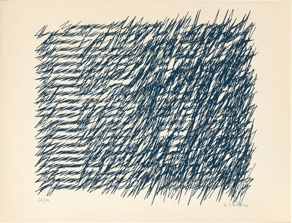

Letters from attractors
One of the first things I plotted when I got a plotter was a pair of attractor traces. The first trace on the first plot, and the second trace on the second plot.
An attractor is a poetic term for a point with gravity which pulls other points. Two of such points, given some velocity and dropped on a canvas, dance around each other. In rare cases, they settle to an orbit, but most of the time they travel offscreen and leave traces which look like wild sine waves. Some look vaguely like writing. Hello from the elementary world!
In the next sketch, I aligned the traces horizontally and then vertically, like in a sketchbook I saw in an exhibition in 2017. (My heuristic is if you saw one thing that you remembered, the exhibition visit was a success).
Although a portion of the attractor trace does look like a letter or a combination of letters, the entire trace is repetitive, and isn't quite like writing.

A bit of digging in the attractor sandbox shows that traces fall into categories: writing, springs and barbs. Also rosettes, which give you infinite React.js logos.
The trace waves are almost symmetrical in every phase. They are mirrored relative to the median path, but this symmetry is carried away by the current. Additionally, the traces often go wild after a few phases. "This system falls apart!" my control theory professor would declare.
I returned to attractors after reading the Spline script article by Anders Hoff. The article describes generating a pseudo-alphabet. We all did that at school for exchanging secret notes and called it "cypher". This time, I made mine from attractor traces. I picked them manually instead of generating on every pass like Anders Hoff does. Some letters, like A, are recognizable.
That article also references a striking piece "Letters from my mother" by Vera Molnár. In it, the handwriting goes out of control by the end of the line. Before I learned the official interpretation, Vera's mother's writing seemed angry to me, and it still does. It's uncannily similar to the attractor's resonance.

My final artwork on attractor writing is personal, like Vera Molnár's. It combines two alphabets, the soft blue one and the spiky red one, and allows the last letters in a line to come undone.

As always, there is an error and a byproduct of it. This time the gravity was set too high and yielded a rain of splinters.